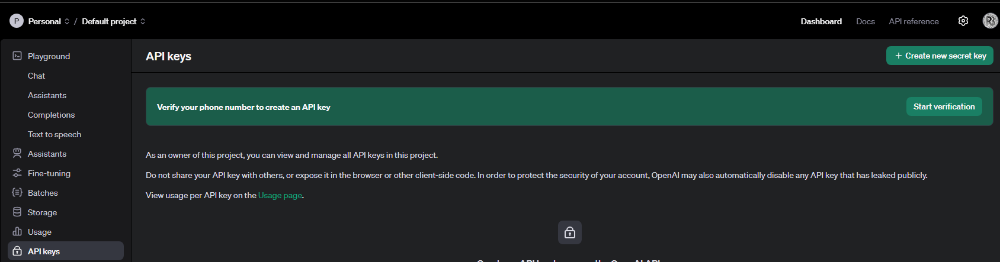
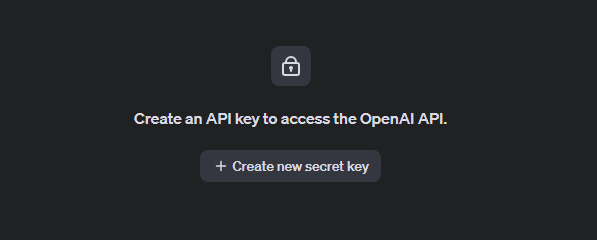
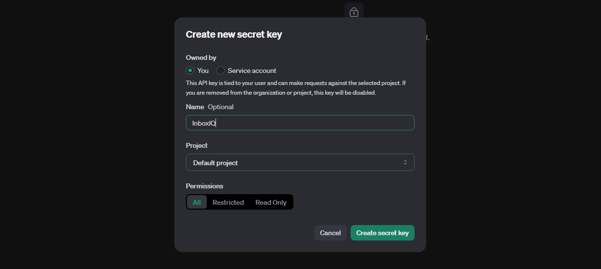
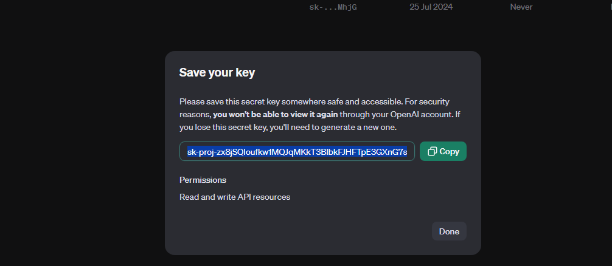
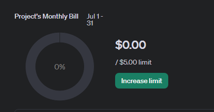
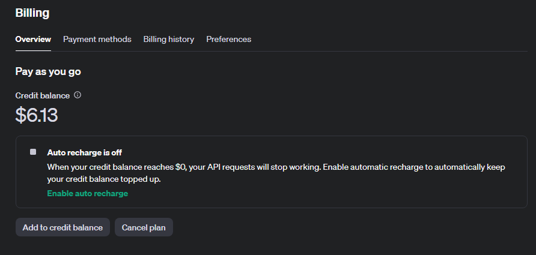

How to Get Your OpenAI API Key
To use InboxIQ, you'll need an OpenAI API key. Follow these steps to obtain one:
-
Create an OpenAI Account
If you don't already have an OpenAI account, go to openai.com and sign up.
-
Log in to Your Account
Once you have an account, log in to the openai api key section here. You may need to verify your phone if you just signed up.
 -
Create API Key
In the api dashboard, look for "+ Create new secret key" and select that.
 -
Optionally name the key and create
Select "Create secret key" to generate a new API key.
 -
Copy Your API Key
Your new API key will be displayed. Copy it immediately and store it securely. You won't be able to see it again!
 -
Increase limit
You will need to increase your limit to use the API. Click here: increase limit to get started.
 -
Proceed with purchase
Once you purchase a pay as you go plan, you can start to use that API Key created. If you lost or forgot the key, you can follow delete the previous one and make a new one.
 -
Enter the API Key in InboxIQ
Open the InboxIQ extension and paste your API key in the designated field in the settings.
Remember, your API key is like a password. Never share it publicly or with anyone you don't trust. If you believe your key has been compromised, return to the OpenAI dashboard and revoke it immediately.
With your API key set up, you're ready to start using InboxIQ to summarize your emails and boost your productivity!
Back Home